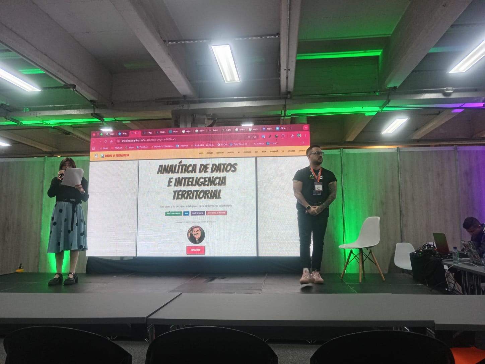
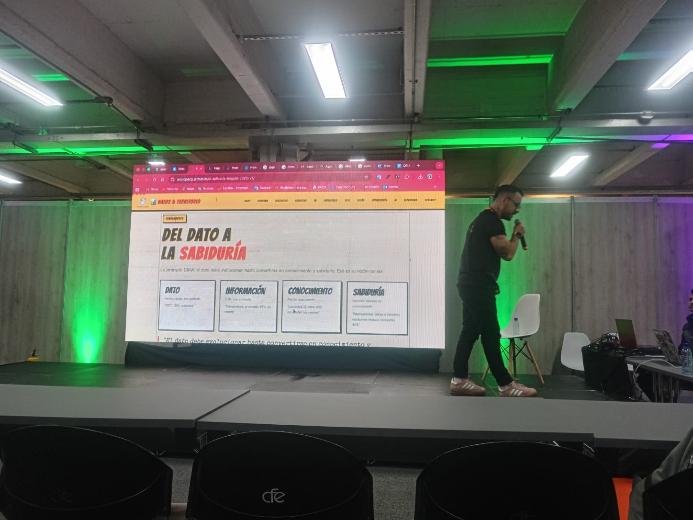
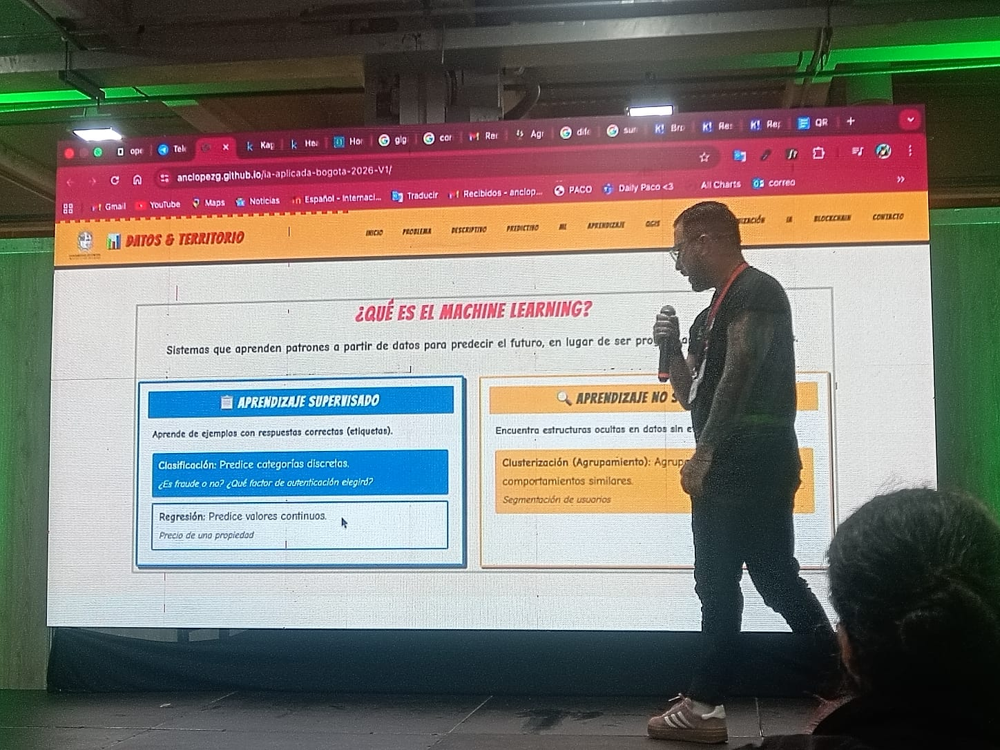
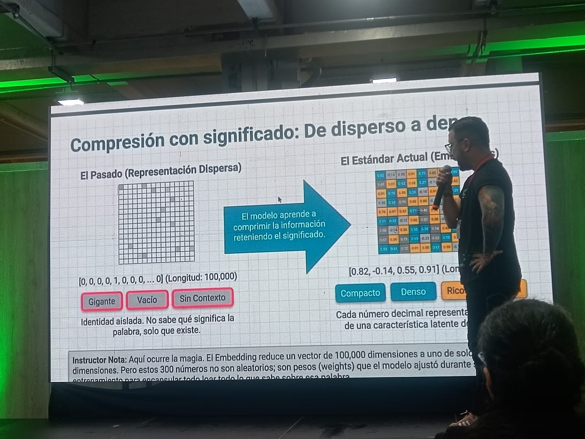
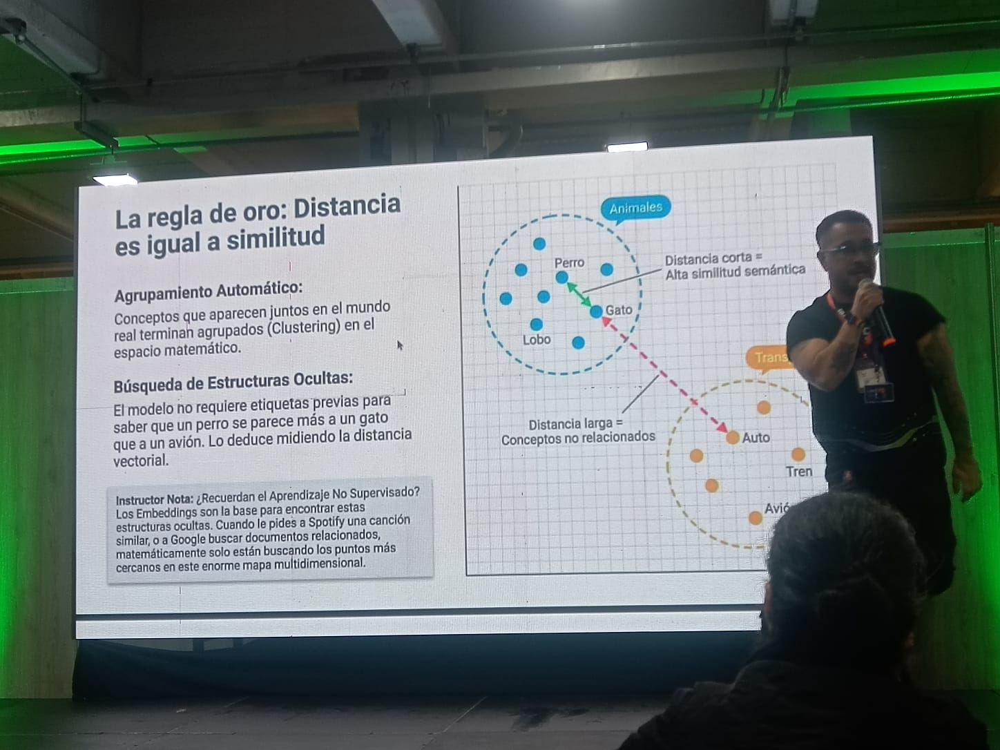
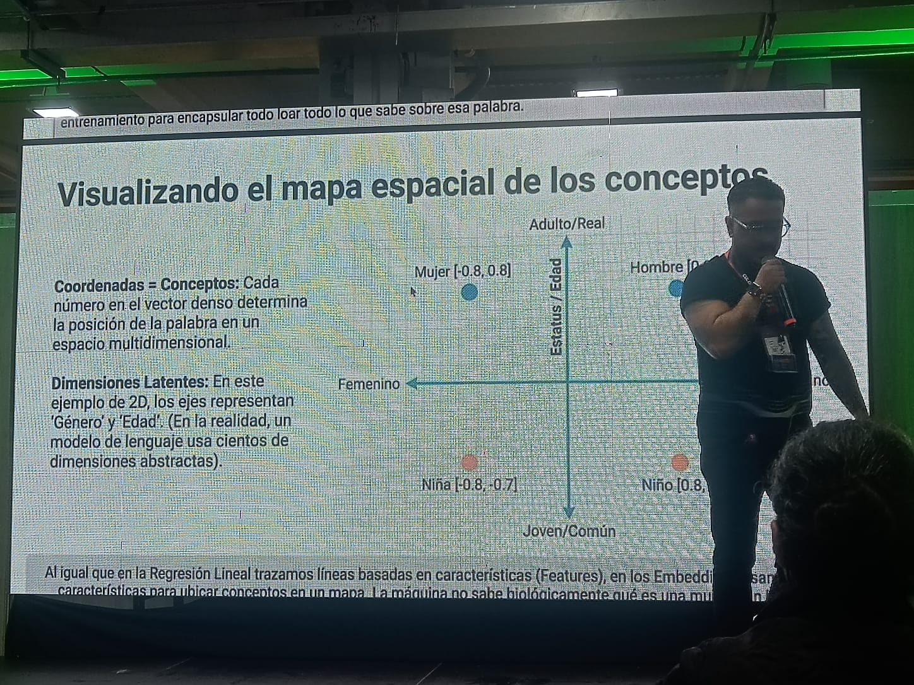
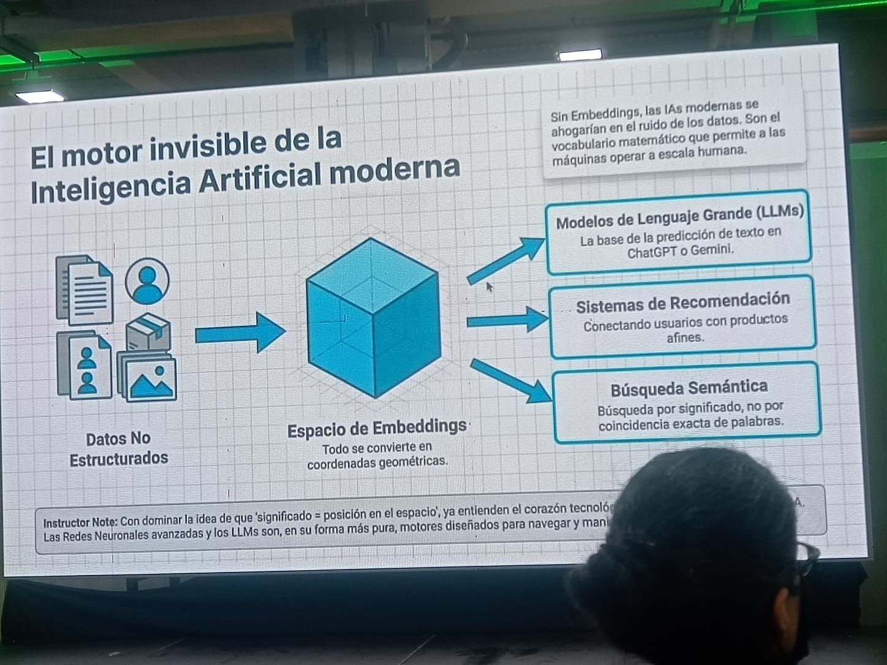
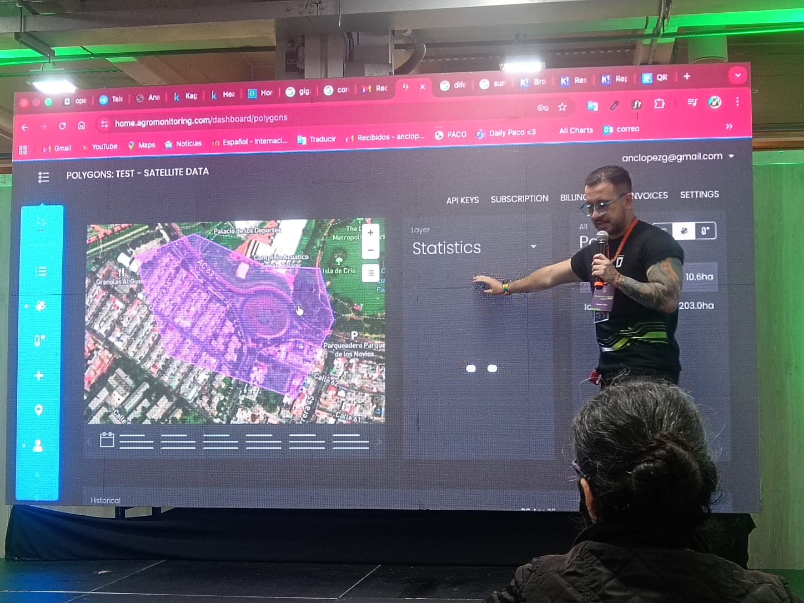

IA Aplicada al Territorio
Llegamos al evento sin saber bien qué esperar, y el primer taller nos abrió la mente desde el minuto uno. El conferencista arrancó con una pregunta simple: ¿qué es un dato? Y de ahí, construyó todo un viaje que fue desde lo más básico hasta cómo la IA entiende el lenguaje. Acá les cuento lo que vivimos.

Apertura del taller — el conferencista presenta el tema al auditorio
Del Dato a la Sabiduría
Lo primero que nos explicaron fue algo que parece obvio pero que cambia cómo uno piensa: los datos solos no sirven de nada. Un número como '25°C' es solo un dato. Pero si dices '25°C en Bogotá en marzo', ya es información. Si además descubres que cada marzo llueve más cuando llega a esa temperatura, eso es conocimiento. Y si usas ese conocimiento para decidir cuándo sembrar, eso ya es sabiduría. A esa progresión la llaman jerarquía DIKW.

Jerarquía DIKW proyectada durante el taller
Naturaleza y Forma de los Datos
Después nos mostraron que no todos los datos son iguales. Hay datos que se pueden contar o medir (cuantitativos), datos que describen categorías (cualitativos), datos que cambian en el tiempo (temporales) y los que solo tienen dos estados posibles (binarios). Y también hay una diferencia enorme entre datos ordenados —como una tabla en Excel— y datos caóticos —como un correo o una foto. Entender esto es clave antes de trabajar con cualquier herramienta de IA.

Tipos de datos

Forma de los datos
Machine Learning: Máquinas que Aprenden
Acá fue cuando el taller se puso más interesante. El conferencista explicó que el Machine Learning no es programar reglas a mano, sino enseñarle a la máquina con ejemplos. Si le muestras miles de fotos de frutas buenas y malas, ella aprende a distinguirlas sola. Hay dos grandes caminos: el aprendizaje supervisado (cuando los datos tienen etiquetas, como 'fraude / no fraude') y el no supervisado (cuando la máquina tiene que encontrar los grupos por su cuenta).

¿Qué es el Machine Learning? — diapositiva del taller
Embeddings: Cuando las Palabras se Vuelven Números
Esta fue la parte que más nos sorprendió. ¿Cómo hace una IA para 'entender' una palabra? La respuesta es que la convierte en coordenadas dentro de un mapa matemático gigante. A eso le llaman embedding. Lo fascinante es que en ese mapa, palabras con significado parecido quedan cerca entre sí. Tan cerca, que puedes hacer operaciones matemáticas con ellas: Rey − Hombre + Mujer = Reina. La máquina nunca aprendió eso de un diccionario, lo dedujo sola a partir de cómo aparecen las palabras juntas.





De la representación dispersa al mapa vectorial de conceptos
IA Aplicada al Territorio Colombiano
Al final del taller, el conferencista nos mostró cómo todo esto —datos, IA, mapas— se une para trabajar en el campo real. Usando una herramienta llamada Agromonitoring, dibujó polígonos sobre zonas de Bogotá y pudo ver en tiempo real datos del suelo: temperatura superficial, humedad, clima. Eso mismo se usa para decidir cuándo regar, cuándo hay riesgo de helada, o cómo optimizar una cosecha. No es ciencia ficción, ya está pasando en Colombia.

Polígonos satelitales sobre Bogotá

Datos de clima y suelo en tiempo real

Entre tema y tema, el conferencista nos metió a un Kahoot para repasar lo que íbamos aprendiendo. El 66% del grupo respondió bien en ese momento — fue una forma entretenida de saber cuánto estaba aterrizando el contenido.